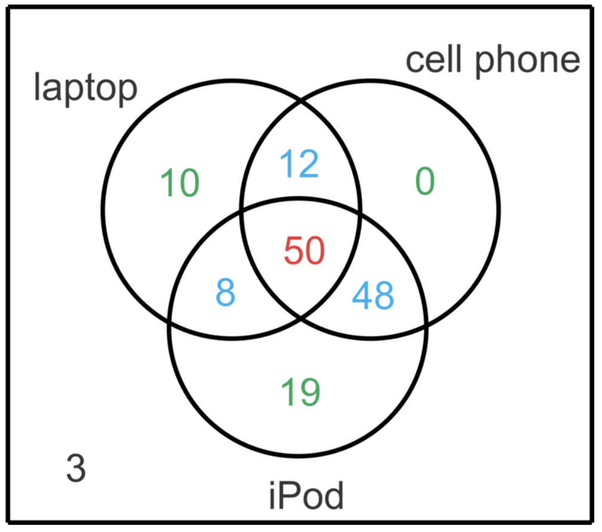

Basic Set Operations
Most of the operations we have seen operate on numbers, but we also operate on sets. Given an arbitrary set S, we can define some binary and unary operations on the set.Union
Let A and B be sets. The union of A and B (denoted by A \(\mathbb{∪}\) B) is the set of all elements that are in A or in B or in both A and B. That is:\(A \mathbb{∪} B = \) {x: x ∈ A or x ∈ B }
It is important to note in the set-builder notation for A \(\mathbb{∪}\) B, the word "or" is used in the inclusive sense; it includes the case where x is in both A and B.
Intersection
Let A and B be sets. The intersection of A and B (denoted A \(\mathbb{∩}\) B) is the set of all elements that are in both A and B. That is,A \(\mathbb{∩}\) B = {x: x ∈ A and x ∈ B}
Disjoint Sets
Two sets are disjoint if they have no elements in common. That is, A and B are disjoint if A \(\mathbb{∩}\) B = \(\emptyset\)Venn Diagrams
When working with sets, as in other branches of mathematics, it is often quite useful to be able to draw a picture or diagram of the situation under consideration. A diagram of a set is called a Venn diagram. The universal set S is represented by the interior of a rectangle and the sets by disks inside the rectangle. Every set A exists within some universe set S.Complement of a set
If S is the universal set, then S-A is denoted by \(A'\) or (\(A^c, \bar{A}\)) and is called simply the complement of A.A' = {x: x ∈ S and x ∉ A}
Set Difference
Let A and B be sets. The complement of A relative to B (notation B-A) is the set of elements that are in B and not in A. That is,B-A = {x: x ∈ B and x ∉ A}
This operation can be rewritten as:
B-A = {x: x ∈ B and x ∈ A'}
Finally, it can be rewritten as:
B-A = B \(\mathbb{∩}\) A'
Important Notes on Set Operations
• n(A \(∪\) B) = n(A) + n(B) - n(A \(∩\) B)• n(A \(∩\) B) = n(A) + n(B) - n(A \(∪\) B)
Let A and B be any two finite sets.
n(A ∪ B) = n(A-B) + n(A∩B) + n(B-A) = n(A-B) + n(A∩B) + n(B-A) + n(A∩B) - n(A∩B) = n(A) + n(B) - n(A∩B)
Examples
Example 1: In a school, every student plays either football or soccer. It was found that 200 students played football, 150 students played soccer and 100 students played both. Find how many students were there in the school using the set operation formula.Solution:
Let us represent the number of students who played football as n(F), the number of students who played soccer as n(S)
We have n(F) = 200, n(S) = 150 and n(F \(∩\) S) = 100
We know that: n(F ∪ S) = n(F) + n(S) - n(F ∩ S)
Therefore, n(F ∪ S) = 200 + 150 - 100
Example 2: Consider the following subsets of the set of all students:
A = set of all computer science majors
B = set of all physics majors
C = set of all science majors
D = set of all female students
Using set operations, describe each of the following sets in terms of A, B, C and D:
(1) set of all students not majoring in science
(2) set of all female physics majors
(3) set of all students majoring in both computer science and physics
(4) set of all male computer science majors
Example 3: In a survey of 150 high school students it was found that:
80 students have laptops
110 students have cell phones
125 students have iPods
62 students have both a laptop and a cell phone
58 students have both a laptop and iPod
98 students have both a cell phone and an iPod
50 students have all three items

a) How many students have just a cell phone?
b) How many students have none of the mentioned items?
c) How many students have an iPod and laptop but not a cellphone?